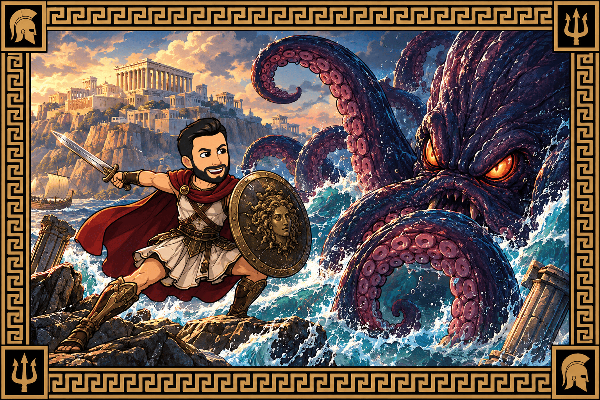

Autoría y licenciamiento
Autoría:
Esta situación de aprendizaje ha sido creada para llevarla a cabo en el IES Ítaca de Tomares por el profesor Joaquín Candañedo Arancón para la asignatura de Matemáticas A de 4º ESO:

Licenciamiento:
Esta obra se distribuye bajo licencia Creative Commons (CC) BY-SA:
Descargar el archivo fuente
| Título | ¡Liberad al kraken aritmético! |
|---|---|
| Descripción | Situación de aprendizaje para trabajar los principales conceptos de aritmética en 4ºESO en Matemáticas A. |
| Autoría | |
| Licencia | Creative Commons BY-SA 4.0 |
Este contenido fue creado con eXeLearning, el editor libre y de fuente abierta diseñado para crear recursos educativos.